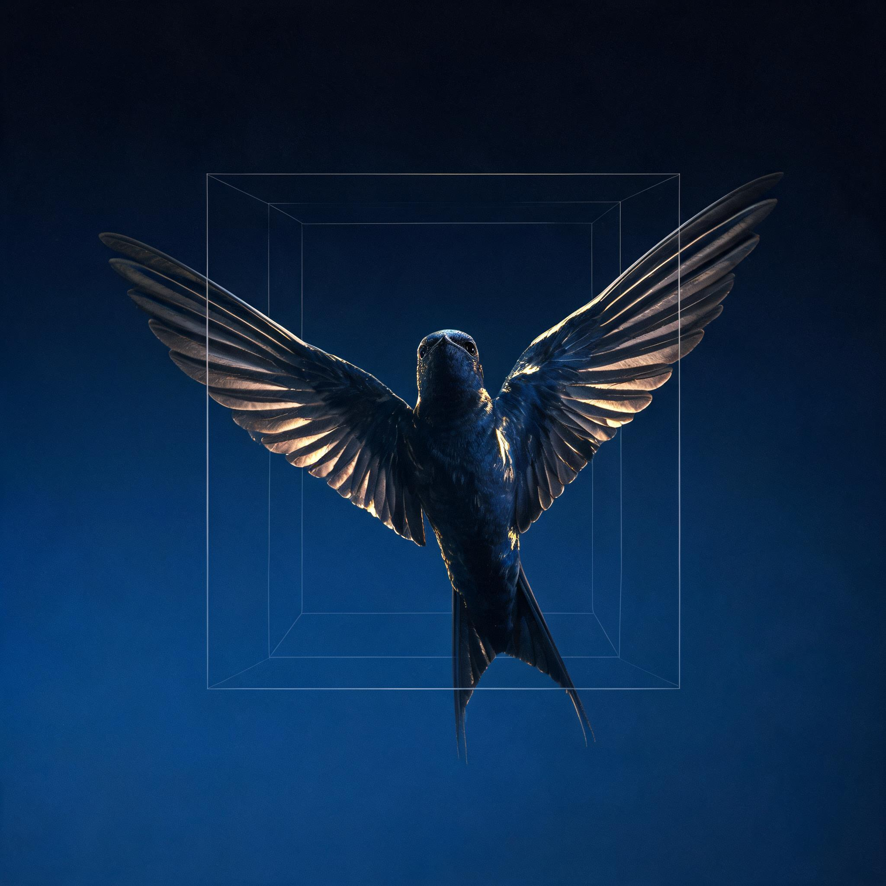

基于钉钉内网 7.5 万字长文《置身钉内》，拆解一个 AI 产品从立项到收缩的全过程，以及背后的组织问题和文化悖论。

作者 2025 年 6 月入职钉钉，入职即加入核心保密项目「O 项目」（O 代表 ONE）。在钉钉飞行了 300 多天，将满一年，到了重新踩回地面的节点。这篇 7.5 万字的文档，记录了一个 AI 产品从立项、发布、共创到收缩的完整过程。
下面就从这个产品的起点说起——ONE 到底想做什么，又为什么承载了太多期望。
ONE 是无招回归后第一个主推的 AI 原生项目。生命周期从 2025 年 4 月开始孕育，8 月 25 日发布会首次公开，DAU 巅峰稳定在 300 万左右。
当一个产品的发心又多又没有主次的时候，就会成为一个贪心而焦虑的产品。ONE 一开始就不是一个纯粹的用户产品，它同时承担了对外宣发、对内指标、对客服务、商业化探索和产品形象换代的多重目标。
目标太多，首先在设计层面就暴露了——ONE 选择了「卡片流」作为核心交互，这个选择如何一步步走进死胡同？
ONE 的设计核心是「卡片流」——把消息、待办、日程、会议、审批重新摆成一张张卡片，主动送到用户面前。这个形态很有诱惑力，极宜 demo，尤宜向投资人 pitch。但走进具体的工作场景后，问题层层浮现。
IM 消息占据用户 80% 以上在钉钉的停留时长。钉钉的文档知识库等知识管理积弱，所服务的传统企业信息沉淀诉求又低。这意味着 ONE 如果不做好 IM，基本等于没做。
但 IM 消息恰恰是最难塞进卡片的——实时性要求极高，已读语义复杂，信息密度远超一张卡片能承载的范围。
放弃全屏卡片、改为列表一屏展示后，留存率从 ~10% 涨到 45%。数据证明：做减法反而有效。
AI 在台面下做了最难的「网状逻辑缝合」，但在台面上，却只给用户呈现了一个「老钉钉里用肉眼扫一下也能看到」的简短摘要。用户感知不到 AI 的降维打击，只看到一个多出来的、需要大拇指去滑动的卡片。
设计上的困局已经很明显了。但更深层的问题在于：这些设计困局背后，是组织文化层面持续存在的矛盾——接下来看看钉钉管理中那些「既要又要」。
原文记录了钉钉管理中大量「说一套做一套」的文化冲突。这些悖论不是某个人的问题，而是组织在高速扩张中必然产生的结构性张力。
这些悖论如何在日常开发中具体体现？核心在于一个问题：团队的「敏捷」到底是对谁的敏捷。
钉钉的响应速度和开发效率在作者接触过的团队中是顶级的。但问题在于：敏捷从来不是抽象的，组织总是对某些人、某些事、某些信号更敏捷。
* 基于原文描述的工作节奏估算，非精确数据
响应快，是不断回答「怎样让这个设计没那么痛」。迭代深，是敢问「这个设计是不是一开始就不该这样」。ONE 在已读问题上，大量时间花在前者——「像房梁歪了，却每天换窗帘、擦地板、调灯光。屋子确实越来越像样，住在里面的人还是觉得不安。」
敏捷走到尽头，就不再只是开发问题了——它变成了秩序问题：谁定义优先级，谁制造紧迫感，谁承担消耗。
飞得最快的鸟，落进一顶透明鸟笼。当可见性成为最高价值，人就会自然地把时间投向「如何被看见」，而不是「如何真正创造价值」。
每周 SM（Scrum Master）给团队成员打等级分。普通 B，好 B+，不好 B-，严重不好 C。组织要求「拉开差距」，每周总要有人背低分。
制度只顾眼前，就会奖励员工学会眼前最容易看见的东西：在线、随时响应、接受传召。人会学得很快——学会在群里出现，学会及时回应，学会把工作切成容易被看见的小块，学会让自己的忙碌留下痕迹。至于那些真正有价值但不显眼的部分，反而要不断自证。
2026 年 4 月 2 日晚，SM 突然通知所有人 12 点前不许下班，要看飞书那栋楼几点熄灯。起因是一份飞书供应商写的对比报告送到大老板面前。作者留到十点半多，意识到自己只是为了呆着而呆着。
焦虑的对面就是竞对。钉钉、飞书、企微在 AI 时代的路径选择完全不同——把它们放在一起看，能更清楚地理解钉钉的处境。
原文详细对比了钉钉和竞对在 AI 产品路径上的差异。核心观点：钉钉没有看错终局，问题在于太早用终局叙事组织中局战斗。
| 维度 | 钉钉 | 飞书 | 企业微信 |
|---|---|---|---|
| 底盘 | IM + OA + 组织架构 | 文档协作 + 知识管理 | 微信连接 + 私域 |
| AI 路径 | 卡片流 → ONE → 悟空 Agent OS | Aily 智能体 + 多维表格 AI | 智能搜索 + 智能机器人 |
| 发布会风格 | PPT 叙事，改元式旗帜 | 全程 Demo，「Slides are cheap」 | 低调功能更新 |
| 核心用户 | 制造业 / 传统企业管理者 | 互联网 / 知识型团队 | 零售 / 服务业客户触达 |
| 组织风格 | CEO 产品驱动，高压创业态 | OKR 文档化，飞阅会 | 微信体系稳健迭代 |
| 战略节奏 | 频繁改元：魔法棒→ONE→悟空 | 稳定迭代 Aily 平台 | 跟随微信生态自然演进 |
原文以西南航空为例论述「放弃」的力量：单一机型、不分舱、不提供正餐、放弃讨好所有乘客的野心，换来极低的成本和极高的飞机利用率。作者感慨：「钉钉最缺的，恰恰是放弃。有时候满打满算的发布会，才是最大的浪费。」
看完产品、设计、管理和竞争格局，最后提炼几条从这 7.5 万字中沉淀下来的核心判断。
ONE 的所有困境都可以追溯到一个根源：什么都想要。广大基数、高频使用、付费深度、老板满意、员工好用——这些目标同时成立的交点极窄。好产品只有一个主发心。
产品定位卡片很诱人，因为它好看、好演示、好讲故事。但工作产品里的「看见」从来不是中性的——看见一条消息意味着已读，看见一个待办意味着责任。设计不只是排界面，是安排权力和责任怎么流动。
产品设计真正的敏捷是更快学习、更快校准、更快承认误差、更快把资源转向正确问题。如果一个团队每天都在动，却没有更接近正确问题，那不叫敏捷，叫奔波。
组织管理当可见性成为最高价值，人就会把时间投向「如何被看见」。汇报链路稳定了，模板齐全了，changelog 齐了——但能力还没闭环，用户价值还没沉淀。脚手架搭久了，人会误以为楼已经建好了。
企业文化用户说「挺好」可能只是礼貌。真正有效的信号是：他愿不愿意多点一次，愿不愿意改习惯，愿不愿意把真实流程交出来，愿不愿意让团队使用。成本才是最诚实的投票。
用户研究庞加莱的灵感在公交车台阶上到来，是因为之前的放松让潜意识完成了整合。如果被逼着每天汇报、每周打分、随时待命，创造性工作最需要的东西——自驱和留白——会被挤压殆尽。
知识工作前面几章写了很多产品的事。如果仍然只问「怎样把产品做得更好」，就又回到了旧路上。人还是工具，经验还是燃料，身体还是成本，痛感还是被提炼成方法论的矿石。一个人来到一家公司，进入一个项目，跟随一位老板，当然可以全力以赴。问题在于，人不能永远以「先把这一阵熬过去」的方式生活。留下来的，是身体、判断、写作能力、亲密关系、对世界的兴趣，以及一个人还愿不愿意相信自己的感受。
词频基于原文 105 页内容统计，字号越大出现频率越高。
本页内容基于 2026 年 6 月在钉钉内网流传的《置身钉内》全文（105 页 PDF，约 7.5 万字）。作者为钉钉 ONE 项目核心产品经理，2025 年 6 月入职，2026 年 5 月前后离职。文档以夹叙夹议的方式记录了 ONE 项目从立项到收缩的全过程，涵盖产品定位、设计决策、用户研究、开发节奏、组织管理和竞品分析。
页面展示的所有引文均来自原文档。数据和时间线基于原文描述整理。本页面为独立分析工具，用于帮助读者理解大型科技公司 AI 产品开发过程中的组织管理问题。